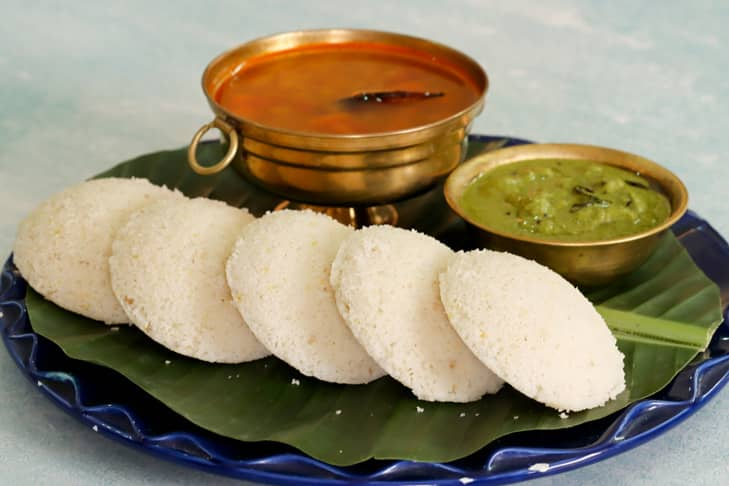

Indian
Chinese

Idly
It all started 4 years ago when Eniyavan, a passionate idli lover decided to dedicate a day for idlis and soon it became a trend in the food world.
The story of this day is as interesting as the origin of idli itself. The delicious South Indian staple that can be served in any meal has actually
become staple for the entire country and the reason is its simple recipe and many health benefits. This World Idli Day, scroll to know more about this
mouth-watering South Indian dish.

Dosa
Dosa is a popular South Indian dish made from fermented batter consisting of rice and black gram (also known as urad dal). The batter is spread thin on
a hot griddle or flat pan and cooked until crispy on one side, then flipped and cooked on the other side. The resulting thin, crepe-like pancake is usually
served with a variety of chutneys, sambar (a lentil-based vegetable stew), and/or potato masala. Dosas are often eaten for breakfast, but they can be enjoyed
at any time of day. They are a staple food in South Indian cuisine, and there are many different variations of dosas, including masala dosa (filled with a
spiced potato mixture), rava dosa (made with semolina instead of rice), and many more. Dosas are known for their crisp texture and tangy flavor, thanks to
the fermentation process. They are also a good source of carbohydrates and protein, making them a nutritious and satisfying meal. Dosas have gained popularity
worldwide and can now be found in many Indian restaurants around the world.

Upma
Upma is a traditional South Indian breakfast dish made by simmering roasted rava in tempered & spiced boiling water. Rava is the South Indian word for 'semolina’
so it is also known as Rava Upma.Traditionally it is made with coarse ground rice or wheat but these days we also makewith many other ingredients like oats,
vermicelli, poha, bread, quinoa etc.This upma recipe follows the traditional method of making it where semolina is dry a 5d roasted until crunchy. Next a tempering
is made with basic spices, chana dal, urad daland curry leaves.